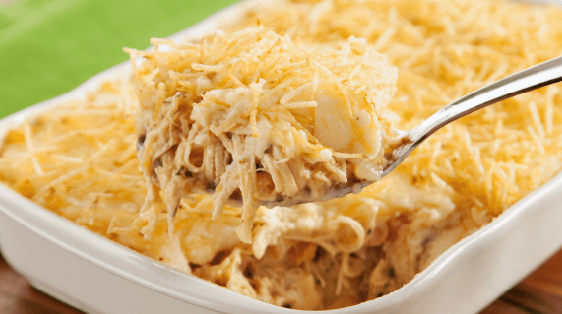

Receita de Fricassê de Frango
Que tal aprender uma receita super fácil de fricassê de frango? Prática, rápida e deliciosa!
Ingredientes
- 2 peitos de frango cozidos e desfiados
- 1 lata de milho verde escorrida
- 1 copo de requeijão cremoso
- 1 lata de creme de leite
- 1 xícara de água do cozimento do frango
- 1 colher (sopa) de azeite ou manteiga
- Sal e pimenta a gosto
- Queijo mussarela fatiado
- Batata palha a gosto
Modo de Preparo
- No liquidificador, bata o milho, o requeijão, o creme de leite e a água do cozimento do frango até formar um creme.
- Em uma panela, aqueça o azeite, adicione o frango desfiado e refogue rapidamente.
- Adicione o creme batido ao frango, tempere com sal e pimenta e deixe cozinhar por 5 minutos, mexendo sempre.
- Despeje a mistura em um refratário, cubra com o queijo mussarela e leve ao forno preaquecido até o queijo derreter e gratinar.
- Retire do forno, adicione a batata palha por cima e sirva quente.

Fricassê de Frango